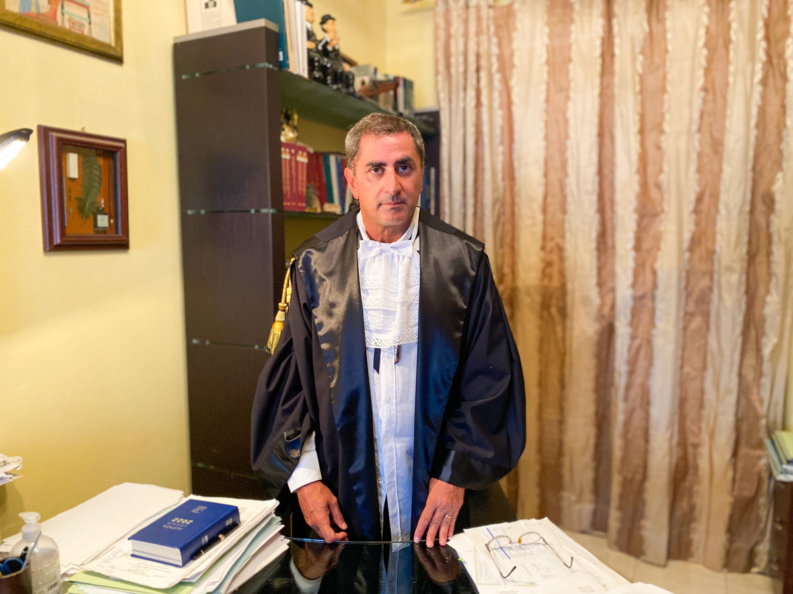

Diritto Penale
Assistenza e difesa in procedimenti penali, dalle indagini preliminari al giudizio, con tutela dei diritti della persona e della responsabilità penale.
Avvocato a Cagliari. Consulenza e assistenza in Diritto Penale, Diritto Civile, Diritto Amministrativo, Diritto Tributario e Diritto Internazionale.
L'avv. Libero Pusceddu, laureato presso l'Università di Cagliari (Facoltà di Giurisprudenza), ha svolto l'attività professionale in diversi Fori sul territorio nazionale: Ancona, Udine, Roma, Gela, Cagliari, Piacenza, Genova, Oristano, Sassari, Nuoro, Lanusei, Milano, Brescia, Mantova, Lodi, Pavia e Palermo. Lo studio situato a Cagliari, si avvale di collaboratori esperti e qualificati.

Assistenza e difesa in procedimenti penali, dalle indagini preliminari al giudizio, con tutela dei diritti della persona e della responsabilità penale.
Consulenza e contenzioso in materia contrattuale, responsabilità civile, diritti reali, successioni e tutela del credito.
Ricorsi e assistenza nei confronti della Pubblica Amministrazione, appalti, edilizia, urbanistica e accesso agli atti.
Consulenza e difesa in materia fiscale, accertamenti, contenzioso tributario e rapporti con l'Amministrazione finanziaria.
Assistenza in controversie con profili transnazionali e rapporti tra ordinamenti, con particolare attenzione alla cooperazione giudiziaria.
Lo studio riceve su appuntamento. È possibile concordare incontri in presenza o da remoto.
Fori in cui ha esercitato: Ancona, Udine, Roma, Gela, Cagliari, Piacenza, Genova, Oristano, Sassari, Nuoro, Lanusei, Milano, Brescia, Mantova, Lodi, Pavia, Palermo.